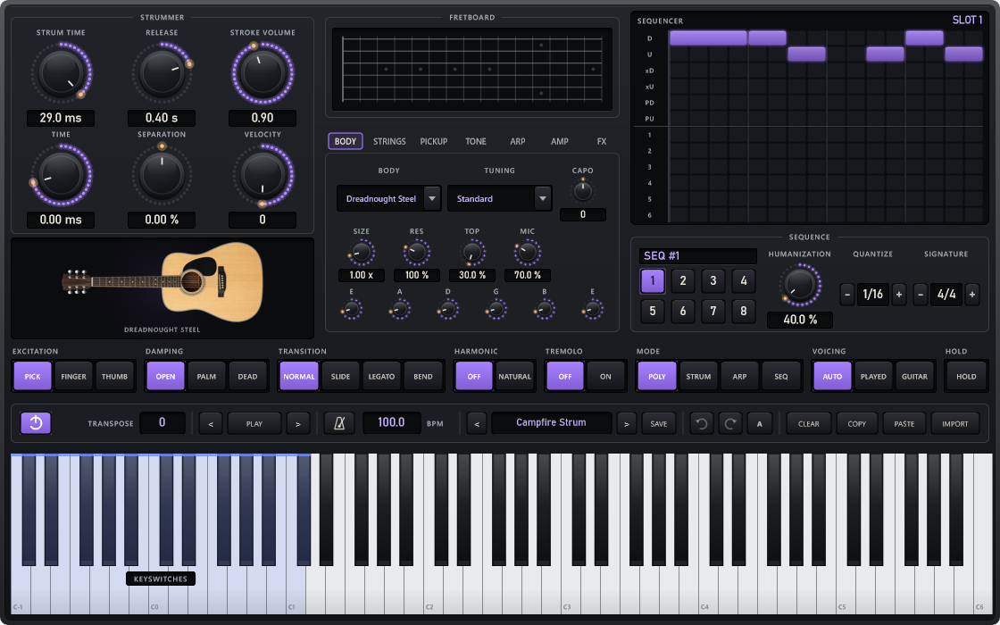

Fretwork VST3 plugin · built, not released
A guitar instrument for your DAW that builds the sound instead of playing samples: a vibrating string, an excitation (pick, finger or thumb), a body and a pickup.
What is in it
- Excitation: pick, finger, thumb.
- Bodies: dreadnought steel, classical nylon, solid electric, semi-hollow.
- Pickups: single-coil, humbucker, P90, with bridge, middle, neck or bridge+neck selection.
- Articulations: palm mute, dead note, slide, hammer-on and pull-off, bend, natural harmonic, vibrato, fret noise, squeak and strum scrape, picked up from MIDI in poly mode.
- Play modes: poly, strum, arpeggio and a built-in step sequencer with MIDI import.
- Parts model: twelve physical controls such as air volume, sound hole, top thickness, bracing, wood density, saddle hardness and scale length.
- Guitars and tunings: 6-string, 12-string, baritone, nylon 12 and 7-string, twelve tuning presets and a capo.
- Effects: amp (off, clean, crunch, lead), cabinet, chorus, delay, drive and room.
The editor

Status
Fretwork builds as VST3 and standalone for Windows 64-bit with JUCE 8 and MSVC. The VST3 on my PC is 12.7 MB, built on 14 Nov 2026. There is no public download yet, so there is nothing to install from this page. A before and after demo needs recorded audio and is not published yet.